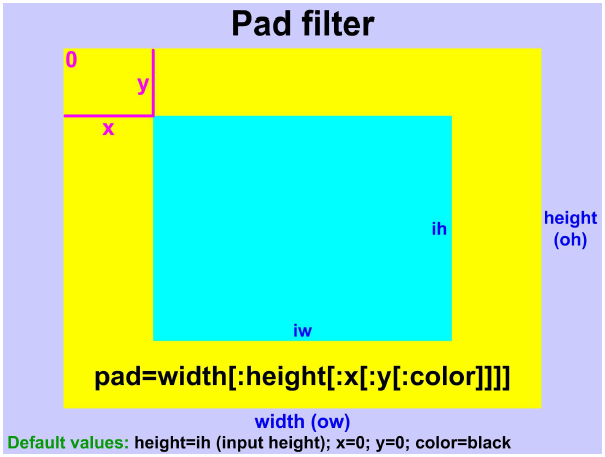
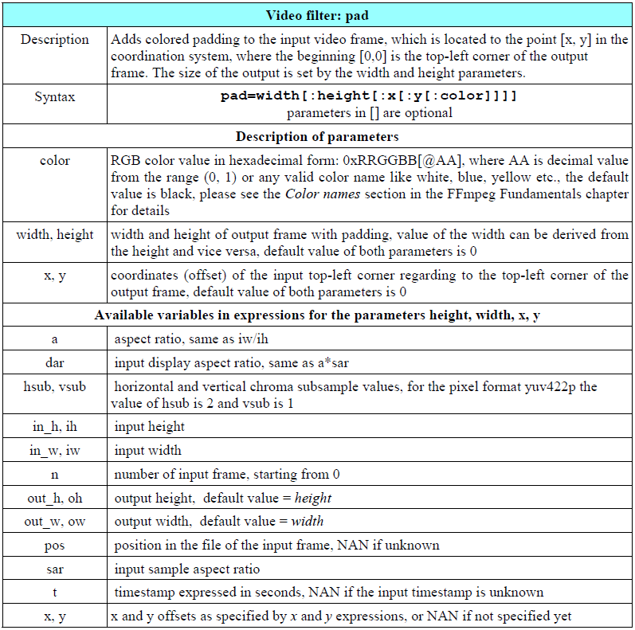

视频的padding属性说明见下图：

ffmpeg中的padding滤镜见下表：

那么来一个栗子，如果要给一张图片添加一个30px宽的粉色边框，可以使用命令：ffmpeg -i photo.jpg -vf pad=860:660:30:30:pink framed_photo.jpg。根据输出文件的大小设置边框，实际上是图片确定左上角，然后根据图片实际大小确定边框距离，输出大过图片尺寸的话其他地方全部用指定的颜色填充，小于图片实际尺寸的话会报错。
使用padding命令将4:3的视频转换为16:9
试了几次上面的命令之后觉得如果能够按照图片实际比例来指定padding距离的话就不用关心输出文件的大小和报错了。接着往下翻果然有这个命令，不过是固定输出尺寸。它的应用场景是这样的：有些播放设备只支持16:9的尺寸，如果我们有一个4:3的视频，可以在水平方向去添加padding，竖直方向不用添加，输出一个16:9的视频出来，
ffmpeg -i input -vf pad=ih*16/9:ih:(ow-iw)/2:0:color output，以上命令中:分割的几个参数含义分别为[输出文件的宽度为输入高度的16/9:输出高度等于输入高度:水平居中之后的两侧padding:竖直方向padding:padding填充颜色]如果不指定color的话默认为黑色填充。使用padding命令将16:9的视频转换为4:3
既然上面将4:3的视频放大到了16:9，那么如何逆向操作，将16:9的视频转换为4:3？不慌，水平宽度不变，竖直高度变为原文件宽度的3/4即可。
ffmpeg -i input -vf pad=iw:iw*3/4:0:(oh-ih)/2:color output。使用padding命令制作宽屏模式视频
76页